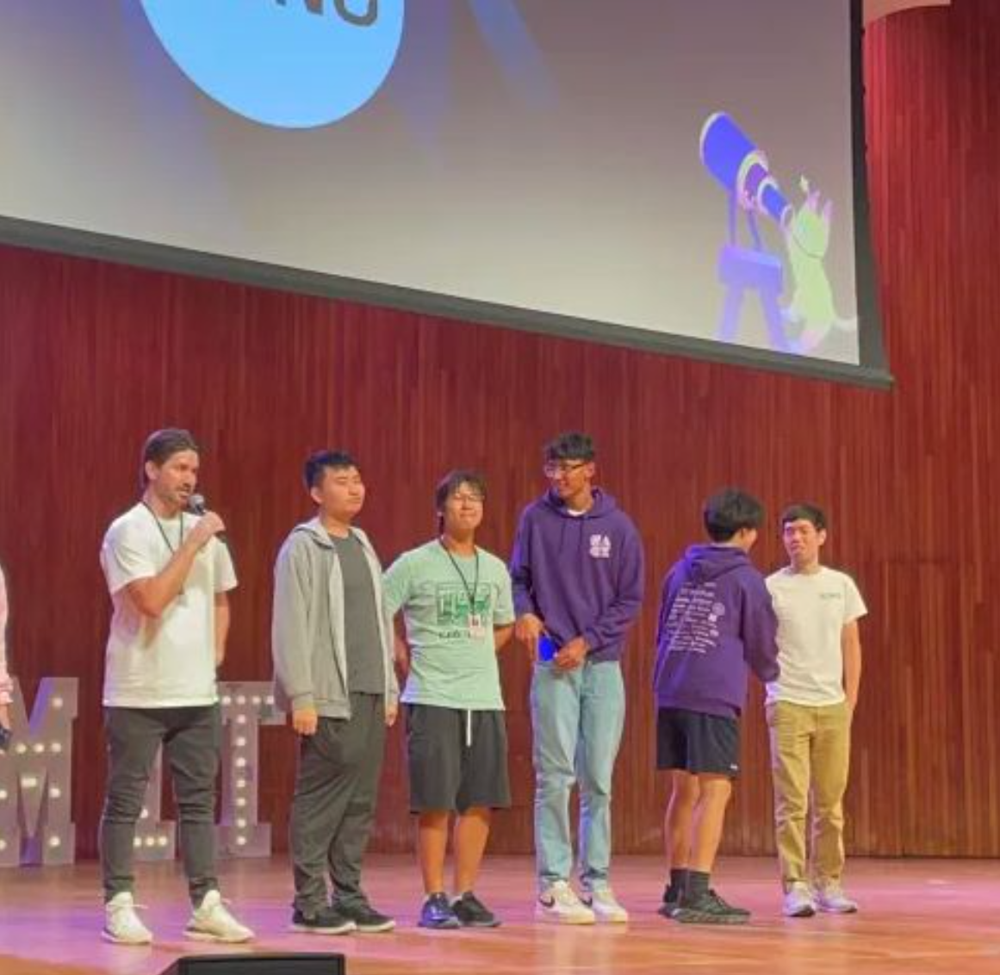
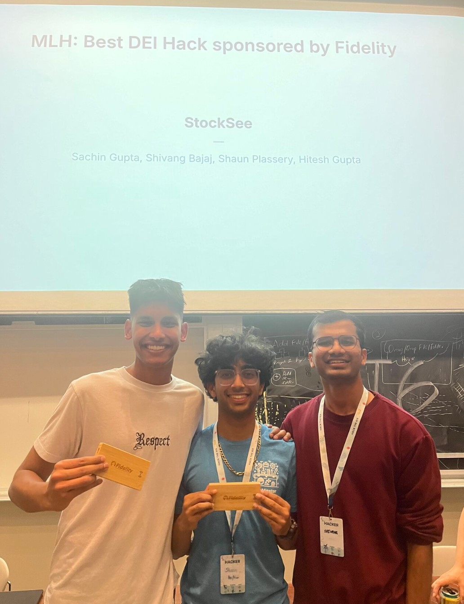
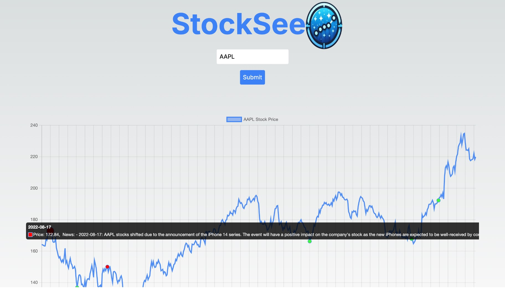
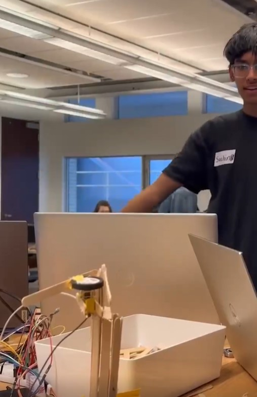
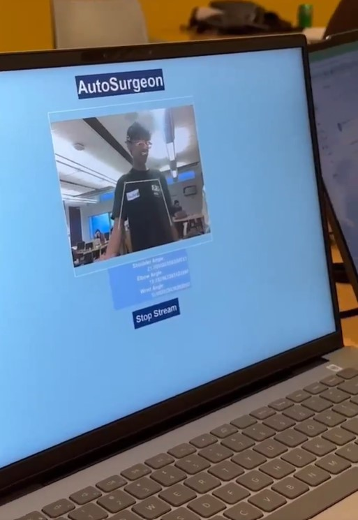
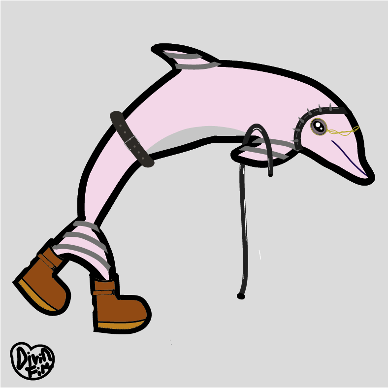
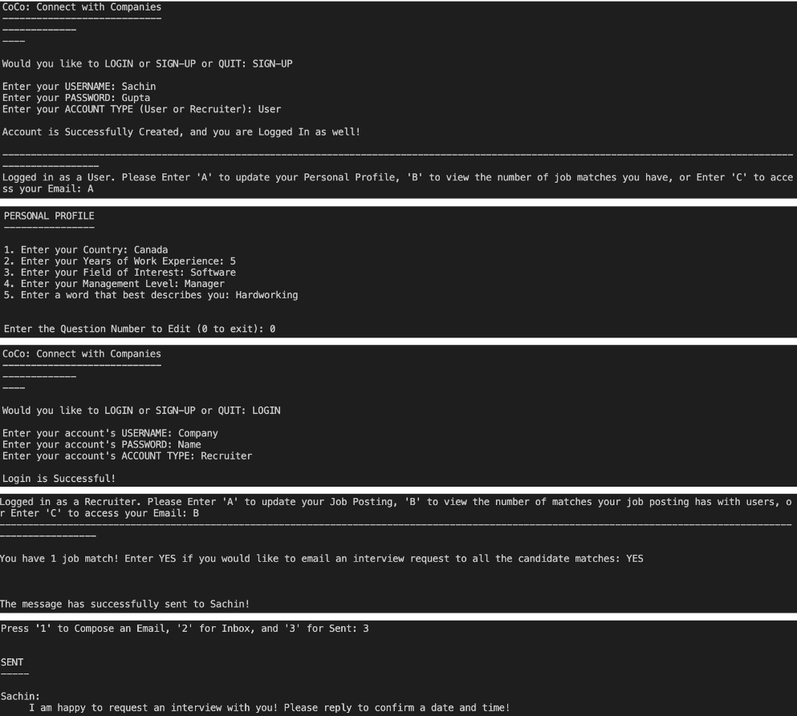
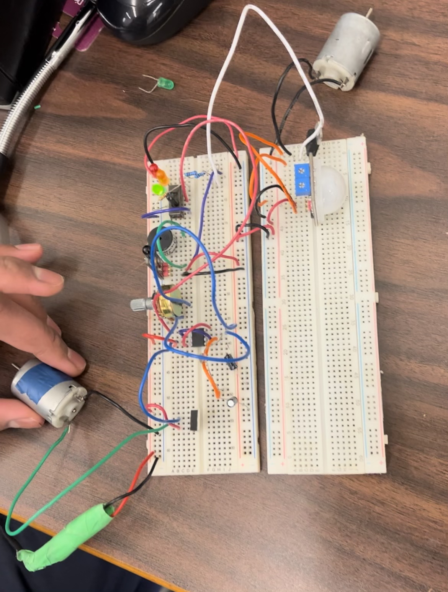
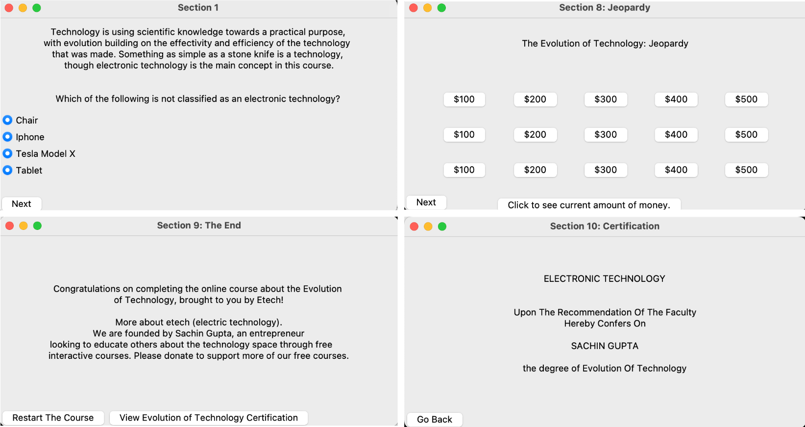
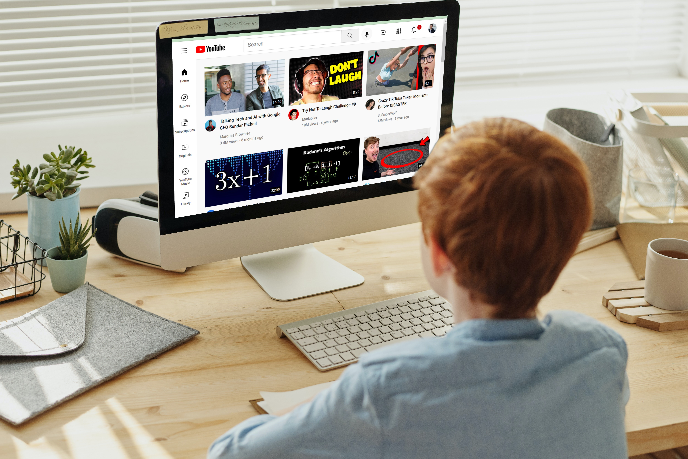

Won Hack MIT --> MITI Music Studio
Developed MITI - an innovative music production platform with AI-powered suggestions and real-time collaboration using React, Vite, CanvasJS, and more. Features include a JSON to MIDI conversion algorithm and an authenticated sign-in system.


React, Vite, CanvasJS, Meta's Llama LLM, Convex + Clerk Backend, SunoAI
Check it out
Won HackThe6ix --> StockSee
Created StockSee in the FinTech category to visually depict the correlation between real-world events and stock prices using Next.js, React, Google Gemini LLM, and more.


Next.js, React, Google Gemini LLM, Yahoo Finance, Python, Flask
Check it out
AutoSurgeon
Developed AutoSurgeon, which mimics the user's arm movements, allowing virtual surgeries to be performed. There are many specialized surgeries that may require specific experts. Many remote places don't have access to these staff in the day to day. Therefore, AutoSurgeon allows these patients to still get the treatment they need, as an expert doctor who is anywhere can utilize AutoSurgeon to remotely perform the surgery.
Created the robotic arm from scratch, and through the integrated circuit plus arduino, developed software that leverages computer vision (OpenCV, MediaPipe) for human joint analysis, linear algebra in Numpy for calculating joint angles, and Pyserial to allow Arduino operation within Python, thus allowing AutoSurgeon to change lives.


Python, Arduino, OpenCV, Mediapipe, Linear Algebra, Taipy
View on GitHub
Quantify
A tool to increase efficiency for stock brokers and novice investors alike. Quantify simplifies the investing experience, by showing you the information you need and want in a clear and concise manner. The top 10 stocks and compare stocks feature helps you decide what to invest in! Through using a live stock data API, users get real time, extremely accurate data and suggestions!

React, Redux, HTML5, CSS3, Bootstrap, Axios, Finviz API
View on GitHub
BumpSense Technologies
Developed BumpSense, an innovative wearable technology that monitors and analyzes user activity, offering real-time feedback and insights on physical performance, with a focus on athletes.

Python, Flask, TensorFlow, React Native
View BumpSense Company Report "Divin Dolphins" NFT Project
Created an NFT project showcasing unique digital art of dolphins, utilizing blockchain technology to secure ownership and enable trading.

Solidity, Web3.js, React
View on OpenSea CoCo (Connect with Companies)
Developed a platform connecting job seekers with companies, facilitating networking and job opportunities through a user-friendly interface.

Node.js, Express, MongoDB, React
View on
GitHub Indigenous Awareness Site
Created a website aimed at raising awareness about Indigenous cultures and issues, featuring resources and educational content.
HTML, CSS, JavaScript
View on
GitHub Chef Safety Device
Developed a safety device for chefs, incorporating sensors to monitor cooking conditions and provide alerts to prevent accidents.

Arduino, C++, Sensors
👲💻
Technology Learning Application
Created an application for learning about various technologies through interactive tutorials and quizzes.

React, Node.js, Express
View on
GitHub Youtube UI Clone
Created a clone of the Youtube UI to practice front-end development skills using HTML, CSS, and JavaScript.

HTML, CSS, JavaScript
View on
GitHub Medical Sterilization Container
Developed a container for medical sterilization, ensuring safety and compliance with health regulations.

SolidWorks, 3D Printing
Download Autodesk Inventor (CAD) Assembly File